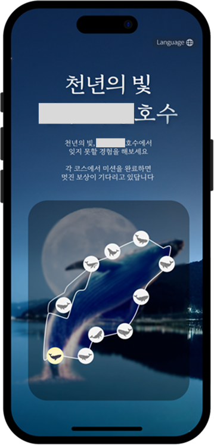
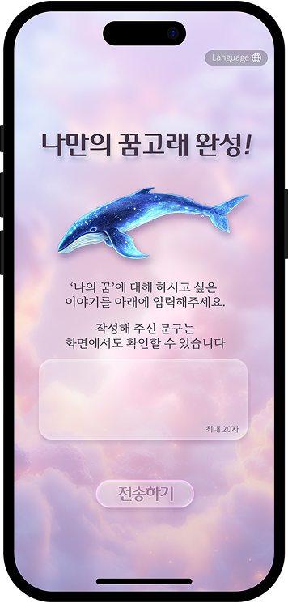

호수 관광 활성화 프로젝트 제안
AI/AR 기반 기술 스탬프 투어 기획



업무 요약
지방 도시 호수 유대 관광 활성화를 위한 오프라인 체험형 콘텐츠 제안서 작성에 참여. 총 10개의 현장 스팟에서 진행하는 스탬프 투어 콘텐츠(기술 기반)를 제안
업무 내용 · 전략
[AR/AI 기술 기반의 스토리텔링]
10개 스팟에 각기 다른 미션 기반 콘텐츠 기획
AR 인터랙티브 필터, 생성형 AI 이미지/음성/메시지 제작
[사용자 참여 플로우 설계]
QR 접속 → 마커 인식 → 체험 → 스탬프 수집 → 보상 플로우
[확산형 인터랙션]
결과 이미지 저장 및 SNS 공유 기능 포함
성과 · 결과
사용자 입장에서 참여가 편하도록 직관적이고 쉬운 플로우로 설계
클라이언트가 요청한 키워드 '고래' 등을 확실하게 각인할 수 있도록 일관적 설계